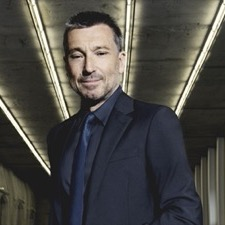

Key conclusions
The company
Independent Swiss watchmaker founded 1884. CHF 820 million turnover in 2025 (-3% year-on-year), ranked 9th among Swiss watch brands by turnover. 2,219 employees worldwide, 300 boutiques in 29 countries. Majority-owned by Partners Group; CVC Capital Partners holds a minority stake. Both owners have written down Breitling's valuation to roughly half its 2023 level.
The role
Lead e-Commerce Europe & Managing Director BEU — on-site in Lijnden, Netherlands, reporting to the Global Head of eCommerce & Digital Engagement in Switzerland. Owns the e-commerce budget and targets across EMEA (Europe, Middle East and Africa) and South East Asia, e-commerce logistics and stock planning, market expansion, key partner relationships (payments, logistics), and oversight of multilingual customer service teams in Amsterdam and Hong Kong. Temporary contract; duration not disclosed.
Company context
Turnover peaked at CHF 870 million in 2023 and declined to CHF 820 million in 2025. Breitling UK's filed revenue fell from £89 million to £57.9 million over two years (-24% in the latest filed year). Moody's downgraded Breitling's debt on the earnings decline. The brand is mid-way through a House of Brands expansion (Universal Genève, Gallet) and a boutique rollout, while its private equity owners face a debt refinancing process.
Key opportunity
A revenue and customer-service mandate spanning two regions and two service hubs, inside a business under active cost and margin scrutiny from its owners — the opening is to run e-commerce for EMEA (Europe, Middle East and Africa) and South East Asia as one disciplined P&L, not two.
Contents
- House of Brands — the watch portfolio
Breitling, Universal Genève and Gallet, with the current catalog and prices for each. - Ownership, turnover & the Swiss watch trade
Ownership timeline, five-year turnover, and where Breitling ranks against Omega, Longines, Tissot. - Breitling Europe (BEU) & the operating footprint
The three structural challenges this role is built to solve. - 3 structural challenges
A two-region budget · two customer service hubs · declining core markets under owner scrutiny. - How Breitling organizes e-commerce, client relations & anti-fraud
Digital & IT structure, the Client Relations Squad, and how fraud screening is handled. - Role scope & Olga's experience
The posting's own responsibilities and requirements, four accountability areas mapped to Olga's experience, and a 5-step priority stack. - Leadership & owners
Most likely direct report, regional presidents in scope, CEO, Chief Customer Officer, Chief Commercial Officer, Chief Marketing Officer, board chair. - KPI (key performance indicator) framework
Commercial, digital operations, fraud and payments, customer service, customer experience, governance. - Consumer feedback & satisfaction
Trustpilot, PissedConsumer, Yelp, Google boutique ratings — plus/minus themes from 49 reviews read.
01
Portfolio
House of Brands — Partners Group's watch portfolio
Breitling
Core brand. Founded 1884. CHF 820M turnover, 2025. breitling.com
Universal Genève
Ultra-premium/haute horlogerie tier. Founded 1894. Acquired by Breitling, end of 2023. universalgeneve.com
Gallet
Accessible/adventure tier. Founded 1826. Acquired by Breitling, spring 2025; relaunched 2026. gallet.com
Universal Genève and Gallet operate as sister brands under the same House of Brands structure, sold in part through Breitling's own boutique network. This role's scope is Breitling only — Universal Genève and Gallet are shown for context. Sources: WatchPro · Wikipedia / Universal Genève · Wikipedia / Gallet & Company
Breitling — one model per current collection, 10 collections


The first-listed (entry) reference in each of Breitling's 10 current collections — not a published sales or popularity ranking; Breitling does not publish a best-seller list. Prices: official U.S. list prices, USD, breitling.com.
Universal Genève — Polerouter collection (4 references shown, price largely undisclosed)


Universal Genève's site shows collection names (Polerouter, Compax, Cabriolet, Disco Mini, Signature, Capsule, Couture) rather than a searchable catalog with consistent pricing — consistent with its ultra-premium, limited-production positioning. Only the Polerouter Camaïeu displayed a price at time of writing: CHF 40,320 (also shown as $46,368 / £40,750 / €46,800 on the same page).
Gallet — 10 references, close to the full published catalog


Gallet relaunched under Breitling ownership in 2026 with a small, deliberately limited catalog across four lines (Flying Officer, Multichron Pilot, Multichron Sport, Gallet Classics) — these 10 references are close to its entire published range, not a curated top-10. Prices: official list prices, EUR, gallet.com.
02
Financials & Market
Ownership, turnover & the Swiss watch trade
Ownership timeline
From the founding family to two private equity owners now marking the business down
| Date | Event |
|---|---|
| 1979 | Ernest Schneider buys Breitling from the founding family |
| April 2017 | Theodore Schneider sells an 80% stake to CVC Capital Partners for $870 million; Georges Kern appointed CEO |
| November 2018 | Schneider sells the remaining 20% to CVC |
| December 2022 | Partners Group acquires a majority stake from CVC; Alfred "Fredy" Gantner becomes chairman of the board |
| 2023 | CVC sells a further stake to Partners Group at a $4.5 billion valuation; Partners Group holds just over 50%, CVC retains roughly 23.6% |
| 2025–2026 | CVC and Partners Group write down Breitling's valuation to roughly half its 2023 level (CVC marks its stake at 0.5x invested capital, Partners Group at 0.7x); Moody's downgrades Breitling's debt; owners face a debt refinancing process |
Turnover, 2021–2026
Estimates from the same annual publisher series — Morgan Stanley & LuxeConsult's Swiss Watcher report
| Year | Turnover (CHF) | Note |
|---|---|---|
| 2021 | 680 million | — |
| 2023 | 870 million | Peak year |
| 2025 | 820 million | -3% year-on-year; 155,000–160,000 watches produced |
| Year to 31 Mar 2026 | 769 million | -11%. Breitling's own reported net sales; adjusted EBITDA (earnings before interest, tax, depreciation and amortisation) CHF 162 million, down 21%. Job cuts announced in human resources, marketing and sustainability |
Direction into 2026: down. The company's own figures for the year to 31 March 2026 show sales 11% lower and adjusted EBITDA 21% lower, with a strong Swiss franc and the United States — its largest market — named as the main pressures. Swiss watch exports industry-wide were CHF 12.8 billion in the first half of 2026, 0.7% below the same period of 2025.
Sources: Morgan Stanley & LuxeConsult, Swiss Watcher annual reports. 2025 report · The Hour Markers, Breitling year to 31 March 2026 · Federation of the Swiss Watch Industry, first half 2026
Where Breitling sits — 2025 Swiss watch brand turnover
Top 20 of the Morgan Stanley & LuxeConsult ranking — Breitling's competitive set
| Brand | 2025 turnover |
|---|---|
| 1. Rolex | CHF 11.0bn (€11.7bn) |
| 2. Cartier | CHF 3.49bn (€3.71bn) |
| 3. Audemars Piguet | CHF 2.60bn (€2.77bn) |
| 4. Patek Philippe | CHF 2.50bn (€2.66bn) |
| 5. Omega | CHF 2.21bn (€2.35bn) |
| 6. Richard Mille | CHF 1.75bn (€1.86bn) |
| 7. Longines | CHF 920m (€979m) |
| 8. Vacheron Constantin | CHF 914m (€973m) |
| 9. Breitling | CHF 820m (€873m) |
| 10. Tissot | CHF 720m (€767m) |
| Brand | 2025 turnover |
|---|---|
| 11. TAG Heuer | Not published |
| 12. IWC | Not published |
| 13. Jaeger-LeCoultre | Not published |
| 14. Hermès | Not published |
| 15. Swatch | Not published |
| 16. Hublot | Not published |
| 17. Tudor | Not published |
| 18. Bulgari | Not published |
| 19. Chanel | Not published |
| 20. Chopard | Not published |
| Outside top 50 — Universal Genève Breitling-owned | Not ranked (est. CHF 30m retail) |
| Outside top 50 — Gallet Breitling-owned | Not ranked |
Euro values converted at the European Central Bank reference rate of 22 September 2026, 1 EUR = 0.9393 CHF. Morgan Stanley and LuxeConsult release turnover estimates only for the leading brands; ranks 11 to 20 are published as an order, without figures, across every version of the report checked (The Hour Markers, Professional Watches, Monochrome, Waqt). Only six Swiss brands crossed CHF 1 billion in 2025: Rolex, Cartier, Audemars Piguet, Patek Philippe, Omega and Richard Mille — Breitling and Vacheron Constantin sit just below. Breitling's sister brands Universal Genève and Gallet appear nowhere in the top 50, so the CHF 820 million above is the House of Brands' entire ranked position. The Universal Genève figure is derived, not published: Georges Kern states about 2,000 watches for 2026 at a CHF 15,000 entry price, which is roughly CHF 30 million at retail and less at wholesale — against CHF 720 million for 10th-placed Tissot. Gallet publishes no volume; its catalog runs to 10 references from €6,100.
Source: Morgan Stanley & LuxeConsult, Swiss Watcher 2025. Chronohunter · The Hour Markers · Swiss Watches Magazine, Georges Kern on Universal Genève volume
Wholesale vs. retail sales value, e-commerce & the boutique split
What is publicly disclosed, and what is not
| Figure | Value | What it measures |
|---|---|---|
| Wholesale turnover, 2025 | CHF 820 million | Revenue Breitling books, at wholesale prices — the figure used throughout this brief and in the brand ranking above |
| Estimated retail sales value, 2025 | CHF 1.1 billion | Analyst estimate of what consumers paid at retail price across all channels, down from CHF 1.2 billion in 2023 — not a separate disclosed figure, and not a channel split |
| Own retail network share of revenue | 30% (vs. 15% five years earlier) | Breitling-operated boutiques and stores as a share of total revenue, per Forbes, 27 August 2021, citing Georges Kern — the most recent public figure found; no more current disclosure located |
Boutique operating model: Breitling runs boutiques directly in flagship cities (London, Geneva, Paris, New York among them) and operates the rest through franchise/partner retailers — named partners include Watches of Switzerland Group, The 1916 Company, Westime, Reeds, Berry's, Beaverbrooks and The Hour Glass. In the United Kingdom specifically, close to 30 branded boutiques are mostly run by these external partners rather than Breitling itself. No current public source discloses the exact number split between directly-operated and franchise boutiques, nor an e-commerce-specific share of revenue — Breitling's own case studies describe online-to-boutique conversion (appointments booked online, phone sales of high-value pieces) without quantifying an overall online revenue percentage.
Sources: Forbes, 27 Aug 2021 · Watches of Switzerland Group, Breitling partnership · breitling.com, retail partnerships · Contentsquare, Breitling case study
Retail & digital strategy, in Georges Kern's own words
| Theme | Quote / fact |
|---|---|
| Boutique network | Almost 300 boutiques in 29 countries, stated on Breitling's own careers site |
| Omni-channel | "Our omni-channel strategy, which includes e-commerce" — alongside continued investment in independent jewellers |
| Social commerce | "Already well-established in Asia," named as "a key sub-channel, especially for younger consumers" |
| House of Brands | Breitling, Universal Genève (acquired end of 2023) and Gallet (acquired spring 2025) now sit under a shared retail and brand structure |
03
Operations
Breitling Europe (BEU) & the operating footprint
Role Analysis
3 structural challenges this role is built to solve
01
A "Europe" title, an EMEA (Europe, Middle East and Africa) + South East Asia budget
- The role is titled Lead e-Commerce Europe and based at Breitling Europe B.V. (Lijnden), but the posting's own first responsibility is to "own the e-commerce business budget/targets across EMEA and SEA"
- That means one owner for e-commerce performance across markets on two continents, from a Netherlands base
02
Two customer service hubs, one standard
- Multilingual customer service teams in Amsterdam and Hong Kong — both internal and external (outsourced) — sit under this role
- Customer loyalty, retention and online brand strength are named as direct deliverables alongside service oversight
03
Growth mandate inside a business under owner scrutiny
- Global turnover fell from a CHF 870 million peak in 2023 to CHF 820 million in 2025; Breitling UK's filed revenue fell 24% in its latest year
- Both private equity owners have written the business down to roughly half its 2023 valuation and face a debt refinancing process — the role is still asked to "identify opportunities" and "drive revenue growth"
04
Internal Structure
How Breitling organizes e-commerce, client relations & anti-fraud
E-commerce operations — the technology stack
| Technology | What it does for breitling.com |
|---|---|
| Saleor | The commerce engine: product catalog, cart, checkout and order creation |
| React / Next.js on Vercel | The storefront itself, and the platform it is hosted and served from |
| Contentful | Headless content management system holding campaign and editorial content, separate from the commerce data |
| Algolia | On-site search and product discovery |
| Akamai | Content delivery network: serves pages, images and video from edge locations |
| GraphQL | The interface the storefront uses to query commerce and content data |
| Fluent Commerce | Order management and centralized inventory, live since December 2021 |
| Contentsquare | On-site behavioural analytics: session replay, journey and conversion analysis |
Where Breitling sells online — Europe & South East Asia
breitling.com runs a checkout-enabled, locally-priced site for 138 countries and territories worldwide. Within the role's own scope (EMEA + South East Asia), that covers 48 European markets and 10 South East Asian markets — confirmed live by local-currency pricing at checkout (e.g. Singapore prices in SGD).
| Seller on the order | Model | Markets |
|---|---|---|
| Breitling Europe B.V. Lijnden — the entity this role sits in | Own entity, domestic Breitling is the contracting party and keeps the full margin | Austria, Belgium, Denmark, Finland, France, Germany, Italy, Netherlands, Spain, Sweden |
| Breitling Switzerland SA Grenchen | Own entity, domestic | Switzerland |
| H.O.B House of Brands UK Limited 198 Regent Street, London | Own entity, domestic | United Kingdom |
| Global-e NL B.V. Amsterdam, Dutch company 72541466 | Cross-border, third-party seller Global-e is the merchant of record and carries the customer contract; Breitling keeps the brand, the site and after-sales | Bulgaria, Croatia, Czechia, Greece, Hungary, Luxembourg, Norway, Poland, Portugal, Romania, Slovakia, Slovenia · Malaysia, Singapore, Thailand |
Each market's own terms of sale on breitling.com name the seller. In the Global-e markets the terms state the contract "do[es] not create any responsibilities or liabilities for BREITLING Europe BV", so the order sits with Global-e rather than with Breitling. Sources: Singapore terms (Global-e) · Germany terms (Breitling Europe B.V.) · United Kingdom terms
Source: breitling.com, country/currency selector — 138 countries and territories total across all regions (Africa, Europe, Asia, Americas, Middle East, Oceania); figures above are the Europe and South East Asia subsets only.
Client relations / customer service
Branded internally as the "Client Relations Squad." Per this job posting, multilingual customer service runs as both internal and external (outsourced) teams, from two hubs — Amsterdam and Hong Kong. No single published service-level standard covers both hubs.
Source: LinkedIn, job posting
Anti-fraud & payment security
Fraud screening: Riskified. Payments: Adyen. Tax compliance: Avalara.
Source: Mirumee, Breitling on Saleor
05
Role scope
Lead e-Commerce Europe & Managing Director BEU — four accountability areas & Olga's experience
Responsibilities, as written in the posting
| Key Responsibilities (verbatim from the posting) | Requirements (verbatim from the posting) |
|---|---|
| Lead the local organization, setting strategic priorities and objectives, developing teams | At least 5 years of experience in a senior e-commerce, digital commerce, business development or commercial leadership role |
| Own the e-commerce business budget/targets across EMEA and SEA, identifying opportunities | Proven track record of successfully managing teams and leading cross-functional organizations |
| Develop and implement new sales plans while continuously improving existing e-commerce | Strong experience in e-commerce management, digital operations and business development |
| Lead e-commerce logistics and operational excellence, ensuring seamless end-to-end delivery | Strong commercial and strategic mindset, with demonstrated experience in driving revenue growth |
| Develop and drive customer loyalty and retention initiatives, strengthening online brand presence | Strong analytical and structured approach, with the ability to interpret data and monitor KPIs (key performance indicators) |
| Develop plans to expand the online presence into new markets, identifying opportunities | Proven experience leading complex digital projects across internal and external teams |
| Steer e-commerce stock planning and management across the responsible markets | Experienced in e-commerce platforms, CMS (content management system) and UX/UI (user experience and user interface) best practices |
| Maintain and strengthen relationships with key business partners across payments, logistics | Comfortable working with digital and business tools, including Microsoft Office, Jira, Confluence, GA4 (Google Analytics 4), SAP and Power BI |
| Oversee internal and external multilingual customer service teams (Amsterdam and Hong Kong) | Fluent in English |
Source: LinkedIn, job posting — reports to the Global Head of eCommerce & Digital Engagement, based in Switzerland.
01
E-Commerce Budget & Market Growth (EMEA + South East Asia)
Own the e-commerce budget and targets across EMEA and South East Asia; identify growth opportunities; develop and implement sales plans.
P&L ownership
Revenue growth
Market expansion
Olga's experienceRichemont: Director European E-Commerce Sales & Operations, based in Amsterdam — full P&L responsibility for a €150 million e-commerce business spanning 12 luxury Maisons across 26 European countries, delivering 30–250% revenue growth per year.
02
E-Commerce Logistics, Stock & Partner Relationships
Lead e-commerce logistics and operational excellence; steer stock planning across responsible markets; maintain relationships with payments and logistics partners.
Logistics
Stock planning
Partner management
Olga's experienceRichemont: directed logistics collaboration across distribution centres and third-party vendors; led anti-fraud and payment transformation. adidas: designed the EU network of stock points for stock optimisation and client satisfaction.
03
Customer Loyalty, Retention & Multilingual Service Teams
Develop and drive customer loyalty and retention initiatives; oversee internal and external multilingual customer service teams in Amsterdam and Hong Kong.
Retention
CX transformation
Service oversight
Olga's experienceRichemont: transformed the Client Relations Centre from a cost centre into a revenue-generating e-boutique channel, leading a 240+ FTE team spanning e-commerce, digital sales, anti-fraud and client relations across 26 countries.
04
Team Leadership, Platforms & Local Organization
Lead the local organization, set strategic priorities, develop teams; own e-commerce platforms, CMS systems and UX/UI standards.
Team leadership
Platform ownership
Cross-functional delivery
Olga's experienceRichemont: business owner of Salesforce CRM deployments across 26 countries, reporting to the EU CEO and Global Chief Digital Officer. adidas: built the Digital Partner Commerce function from zero. Nike: led the digital transformation of Intersport, the largest European sporting goods retailer, including a SAP Retail implementation.
Priority stack — 5-step approach
| # | Action | Why first | Output |
|---|---|---|---|
| 1 | Map current state — e-commerce revenue, budget and stock position by market across EMEA and South East Asia | A budget owned across two regions needs one shared baseline before it can be managed as one target | Cross-region performance baseline |
| 2 | Diagnose the weakest markets — starting with the United Kingdom, down 24% in the latest filed year | Owners under active valuation and debt-refinancing pressure need the largest variances addressed first | Market-by-market remediation plan |
| 3 | Align the two customer service hubs — Amsterdam and Hong Kong, internal and external teams, onto one service standard | Customer loyalty and retention are named deliverables, and today's two-hub structure has no stated shared standard | Unified service-level framework |
| 4 | Execute the sales and market-expansion plans — new online markets, platform and CMS/UX improvements | Turns the baseline and the fixed weak points into the growth plan the role is measured on | Sales plan & expansion roadmap |
| 5 | Embed the reporting cadence — with the Global Head of eCommerce & Digital Engagement in Switzerland | Keeps a temporary mandate accountable and auditable for the length of the assignment | Standing performance review cadence |
06
Stakeholders
Leadership & owners
Direct report line
CL
Breitling
Caroline Lennartz
Global Head of E-Commerce & Digital Engagement
Zürich, Switzerland — in role since December 2025; previously Global E-Merchandising Manager at Breitling (August 2022 – November 2025)
The posting names the reporting line only as "Global Head of eCommerce & Digital Engagement, Switzerland" — no individual named. Breitling's own correspondence for this role confirms Caroline Lennartz holds this title. Source: LinkedIn, Caroline Lennartz.
Regional leadership in scope — EMEA & South East Asia
Breitling
Alvin Soon
President, Greater China & South-East Asia
At Breitling since 2015 — 10 years as regional president, full profit & loss accountability. Previously TAG Heuer, Nokia, Samsung, Lenovo
AA
Breitling Middle East
Aed Adwan
Managing Director, Breitling Middle East, India & Africa
Dubai, United Arab Emirates
?
Breitling Europe
Continental Europe — no separate named GM found
This temporary mandate carries the "Managing Director BEU" title itself
No individual could be independently verified holding a standing "GM/President, Europe" title separate from this role.
South-East Asia and the Middle East / India / Africa each have a single named regional president or managing director. Breitling Europe (BEU) instead runs its own Managing Director seat — the seat this temporary mandate fills — with no separately named continental-Europe GM identified. Sources: The CEO Magazine, Alvin Soon · The Star, April 2026 · Arab Watch Guide, Aed Adwan.
Executive board & owners

Breitling
Jean-Marc Pontroué
Chief Executive Officer
Since 1 May 2026, succeeding Georges Kern. Previously CEO of Panerai (Richemont), 2018–2025; earlier Roger Dubuis and Montblanc, 25 years at Richemont overall
House of Brands
Georges Kern
Chief Executive Officer, House of Brands
Moved up from Breitling CEO (April 2017 – April 2026) to lead the House of Brands parent strategy since May 2026. Previously CEO of IWC Schaffhausen (Richemont), 2002–2017
Breitling
Gaelle Devins
Chief Customer Officer & Executive Board Member
Oversees direct-to-consumer channels, CRM and performance analytics. Previously IWC Schaffhausen
NB
Breitling
Nasr-Eddine Benaissa
Chief Commercial Officer
Since September 2017. Previously Partner at McKinsey & Company; Regional Director Middle East & South Asia, TAG Heuer
JK
Breitling
Jancu Koenig
Chief Marketing Officer
Previously Apple, Burberry, J. Walter Thompson, M&C Saatchi
Partners Group
Alfred "Fredy" Gantner
Chairman of Breitling's Board · Co-Founder & Executive Chairman, Partners Group
Chairman since December 2022
Titles and backgrounds: each person's own LinkedIn profile and The Org.
07
KPIs
KPI (Key Performance Indicator) framework — six layers
Commercial (EMEA + South East Asia)
E-commerce revenue vs. budget
Performance against the budget and targets this role owns across EMEA and South East Asia — the first responsibility named in the posting.
Industry benchmark: Bain & Altagamma project the personal luxury goods sector entering 2026 with a 3–5% growth outlook, following a flat 2025.
Market-level revenue growth
Growth by market, with the United Kingdom as the named area of steepest decline in the most recent filed year.
Industry benchmark: online is on track to become the single largest luxury sales channel, at 28–30% of the global personal luxury goods market in 2025.
New-market online revenue
Revenue from markets opened under the online expansion plans this role is asked to develop.
Industry benchmark: e-commerce reached 20.5% of total global retail sales in 2025, up from 19.9% in 2024 — the general-retail online penetration luxury markets are still catching up to.
Conversion & average order value
Site and CMS performance against the sales-plan improvements named directly in the posting.
Industry benchmark: luxury and jewelry e-commerce converts at 0.8–1.5%, well below the 2.5–3.0% cross-industry average, reflecting longer, research-heavy purchase cycles for high-value items.
Digital operations & stock
Stock availability by market
Stock planning and management across the responsible markets — named directly in the posting.
Industry benchmark: a 95%+ in-stock rate is the standard target; retailers treat availability below 90% as a replenishment or forecasting failure.
Order-to-fulfilment cycle time
Logistics and operational excellence for e-commerce, end to end.
Industry benchmark: 24–48 hours is the standard order-processing target, with total cycle time of 1–3 days for competitive e-commerce operations.
Payment & logistics partner performance
Health of the key business partner relationships this role is asked to maintain and strengthen.
Industry benchmark: card authorization rates average 85–92%, with well-optimized merchants reaching 90–95%; cross-border transactions typically run 5–15 percentage points lower.
Platform & CMS reliability
Uptime and UX/UI standard of the e-commerce platforms and content management systems this role owns.
Industry benchmark: 99.9% uptime is the general industry SLA standard (about 43 minutes of downtime a month); high-volume e-commerce platforms typically target 99.9%–99.99%.
Fraud, payments & risk
Chargeback / dispute ratio
Disputes and fraud reports as a share of settled card-not-present transactions, the ratio the card schemes monitor.
Industry benchmark: Visa's Acquirer Monitoring Program sets the merchant threshold at 1.5% from April 2026 (2.2% in Central Europe, Middle East and Africa), with a $8 fee per disputed transaction above it.
False-decline rate
Genuine orders rejected by fraud screening — the direct revenue cost of the Riskified rules this role inherits.
Industry benchmark: the global average false-decline rate is 1.51% of e-commerce sales; two-thirds of surveyed merchants put their own rate between 2% and 10% of orders.
Payment authorization rate
Share of attempted payments approved by the issuer, across the Adyen setup.
Industry benchmark: card authorization rates average 85–92%, with well-optimized merchants reaching 90–95%.
Cross-border authorization gap
The approval penalty on cross-border orders — material where the role runs two regions and 15 markets sell through a cross-border seller of record.
Industry benchmark: cross-border transactions typically approve 5–15 percentage points below domestic ones.
Customer service — Amsterdam & Hong Kong
CSAT (customer satisfaction)
Satisfaction scored on the individual contact, across both hubs and both the internal and outsourced teams.
Industry benchmark: 85%+ is the 2026 contact-centre target; retail as a sector averages 76–85%.
NPS (Net Promoter Score)
Willingness to recommend the brand, the loyalty measure behind the retention work named in the posting.
Industry benchmark: luxury brands typically score 60–75, against a broader retail average of around 45.
OSAT (overall satisfaction)
Satisfaction with the whole brand relationship rather than one contact — the measure that carries across boutique, e-commerce and after-sales.
Industry benchmark: retail overall satisfaction averages 76–85%, with above 85% considered strong.
First contact resolution
Cases closed on the first contact, without a hand-off between the two hubs or out to the repair channel.
Industry benchmark: 70–85%, with artificial-intelligence-assisted operations pushing above 85%.
Average handle time
Time per voice contact, the core productivity measure for both service teams.
Industry benchmark: 4–7 minutes for voice on general service enquiries.
Average speed of answer
How long a customer waits before reaching a person.
Industry benchmark: 28 seconds is the global average.
Call abandonment rate
Customers who hang up before being answered — the clearest signal of a staffing or routing gap between the two hubs.
Industry benchmark: 2–5% is the healthy range.
First response time, email & chat
Time to a first reply on the non-voice channels the multilingual teams also run.
Industry benchmark: email first response averages 7–12 hours industry-wide, under 4 hours is "good"; live chat averages 1 minute 35 seconds.
Customer experience
Customer retention rate
Loyalty and retention initiatives named as a direct deliverable in the posting.
Industry benchmark: luxury goods repeat-purchase rates run 9.9%–15%, the lowest of any retail category, against a 28.2% e-commerce average across all verticals.
Amsterdam + Hong Kong service standard
Response time and quality across the internal and external multilingual customer service teams this role oversees.
Industry benchmark: email first-response time averages 7–12 hours industry-wide (under 4 hours is "good"); live chat averages 1 minute 35 seconds, with 60% of customers expecting a reply within 2 minutes.
Online brand strength
The posting's own language: "strengthening online brand presence" alongside retention work.
Industry benchmark: luxury brands typically score 60–75 on Net Promoter Score, well above the broader retail industry average of around 45.
Cross-border experience consistency
Service and content consistency as the role expands online presence into new markets.
Industry benchmark: retail customer satisfaction (CSAT) averages 76–85%, with above 85% considered strong; scores vary meaningfully between in-store and online experience within the same brand.
Governance & organization
Reporting cadence with Switzerland
Standing review rhythm with the Global Head of eCommerce & Digital Engagement, this role's direct report line.
Industry benchmark: the standard executive operating rhythm is a weekly tactical review (30–45 minutes, leading indicators and blockers), a monthly performance review (forecast-to-actuals) and a quarterly strategy reset.
Team development
Developing teams and setting strategic priorities for the local organization — named directly in the posting.
Industry benchmark: the average employee received 16.7 hours of formal learning in 2025, at an average direct spend of $846 per employee a year.
Cross-functional project delivery
Delivery of complex digital projects across internal and external teams — a stated requirement of the role.
Industry benchmark: only 34% of organizations mostly or always deliver projects on time and on budget; high-process-maturity organizations reach 64–67% on-time and on-budget delivery.
Mandate handover readiness
Documentation and continuity planning appropriate to a temporary mandate with no stated end date.
Industry benchmark: interim-management practice treats handover as a process designed from day one, not compressed into the final weeks, with methods and systems documented and transferred to a named successor.
08
Customer Voice
Consumer feedback & satisfaction
Google — sampled boutiques
4.6/5
Los Angeles, San Antonio, Toronto
Individually listed, no single brand score
Trustpilot rating breakdown — breitling.com
| 5-star | 4-star | 3-star | 2-star | 1-star |
|---|---|---|---|---|
| 25% | 1% | 2% | 4% | 68% |
Source: Trustpilot, breitling.com.
Negative themes — sampled reviews
Positive themes — sampled reviews
45%Repair cost, quality & turnaround
A £700, later £840, repair bill on a £6,000 watch; a $1,000 service charge on a $10,000 watch after water damage; one case running 6 months and ending in total watch failure. Crowns and rubber straps are not sold separately, which reviewers describe as forcing a full paid service. PissedConsumer records an 11% full-resolution rate.
20%Boutique & staff service inconsistency
Plymouth called "superior to other watch retailers"; Rome called "rude and dismissive"; a Bond Street visit where staff showed no interest in a repeat customer. The network mixes directly-run and franchise boutiques, each setting its own service bar.
15%Product durability faults
A crown detaching within months on a gold Superocean, water ingress despite a 300m rating, and timekeeping complaints — the faults that trigger the repair-cost cases above.
10%Delivery & logistics delays
A watch promised for 1–2 day pickup arriving after 9 days; a birthday-gift order held back by a quality-control hold.
10%Buyback offers & subscription handling
A trade-in offer described as well below market value; a subscription where payments continued for three months after the watch was reported stolen, with no pause or credit.
45%Knowledgeable, attentive boutique staff
The most-cited positive across Trustpilot and the sampled Google boutique reviews: named staff praised for product knowledge and patience. The same network flagged as inconsistent above.
25%Fast, professional individual support
Reviewers naming a specific customer-service representative for a quick, professional resolution.
20%Service or repair completed as quoted
Where a full service lands within the quoted time and price, reviewers give five stars.
10%Registration & warranty assistance
Warranty registration is repeatedly called out as a smooth first-touch experience.
Sources: Trustpilot — breitling.com, 40 reviews individually read across two pages · PissedConsumer — breitling.com, 9 reviews individually read · Yelp · Google ratings via TrustAnalytica boutique listings (Los Angeles, San Antonio, Toronto).